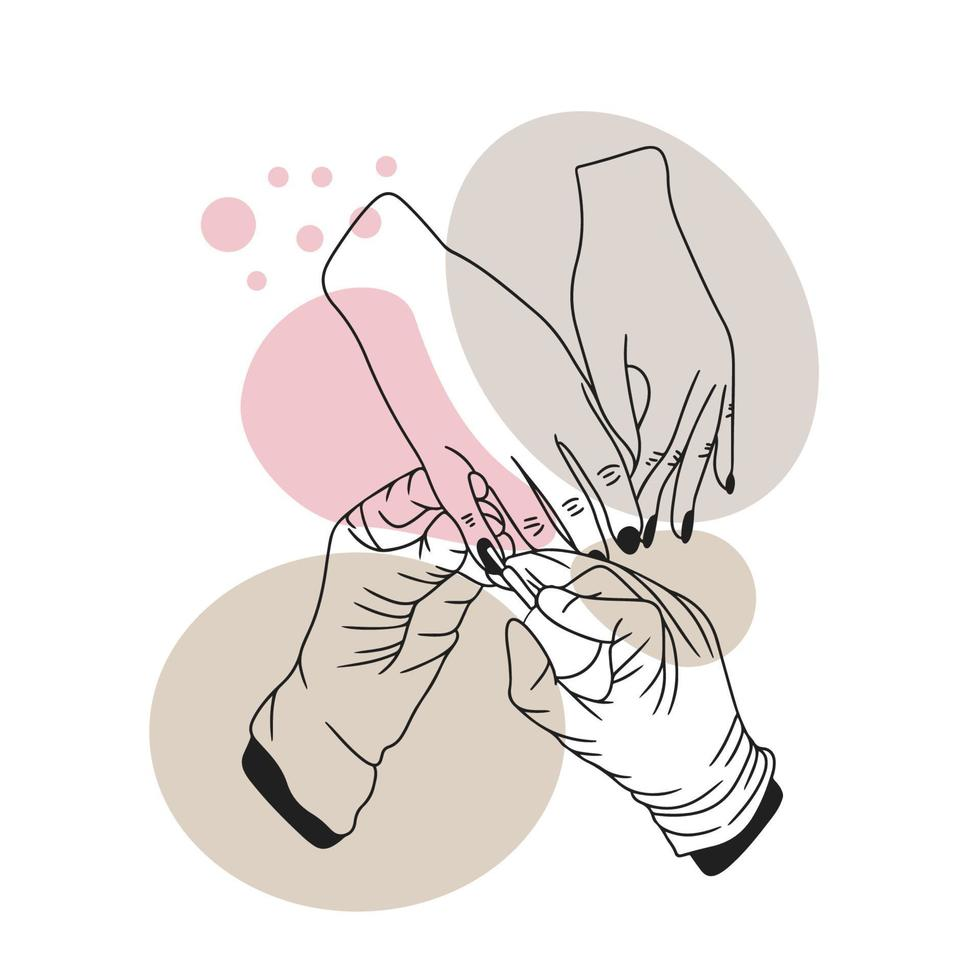

Como aprender a fazer unhas
Blog de hoje fala de unhas, apresentando dicas de cuidados, higiene e explica a importância de manter as unhas limpas. Aprender a fazer unha começa pela preparação correta da base. O primeiro passo é higienizar as mãos, lixar no formato preferido e amolecer as cutículas para empurrá-las suavemente. Antes de qualquer aplicação de cor, uma boa base protetora é essencial para evitar manchas e fortalecer as unhas.
Na hora de pintar, o segredo é a leveza para garantir uma cobertura uniforme. Aplique duas camadas finas de esmalte, aguardando um curto tempo de secagem entre elas e limpe os borrados.
Para manter a saúde das unhas no dia a dia, a hidratação diária das cutículas com óleos ou cremes é fundamental. Proteja as mãos com luvas durante tarefas domésticas e evite usar as unhas como ferramentas para abrir objetos.
